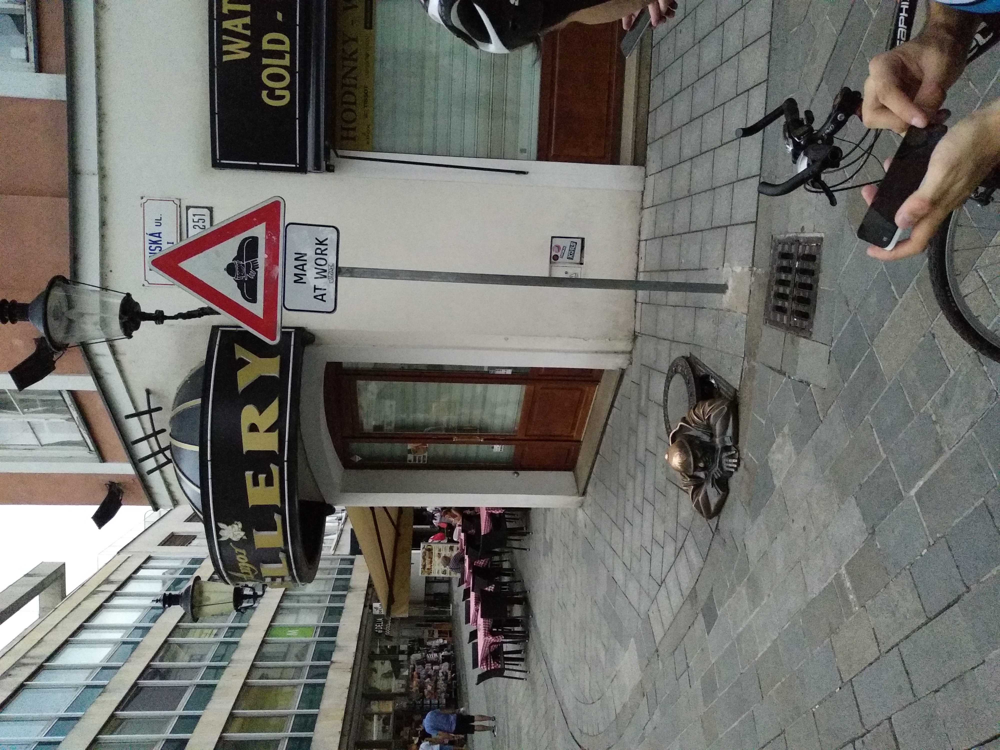
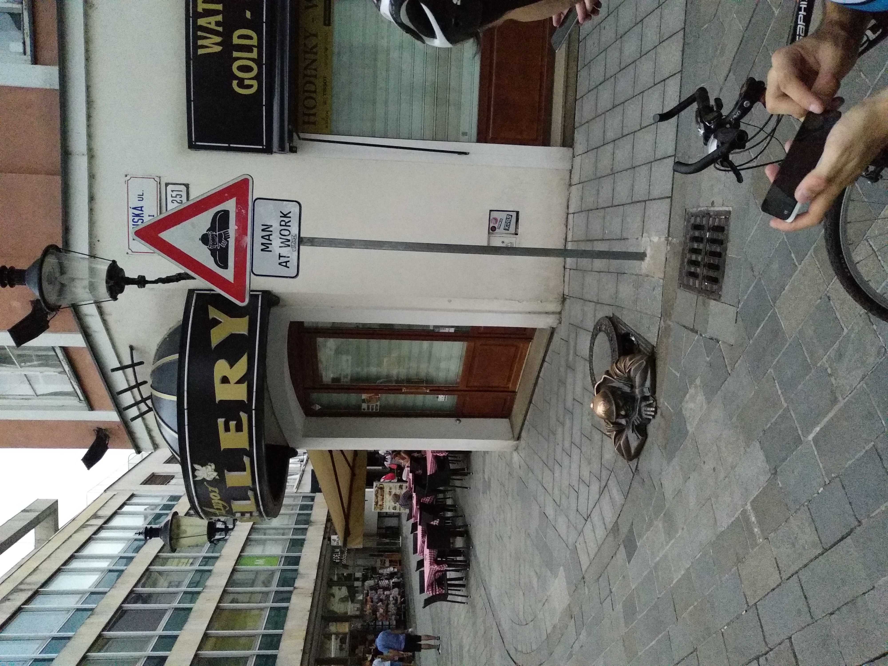

Putování po Rakousku-Uhersku 2019
Den první

Jakožto úspěšný maturant jsem se vydal 21. července 2019 s bandou přátel na kolech po Rakousku-Uhersku. A to doslova... Jediné, co mě mrzí je, že si nepamatuju správné pořadí fotek a událostí, jak po sobě následovali.
Jeli jsme Dejv, Marek a já. Napřed jsme se museli nějak dostat do Bratislavy. České dráhy proto byli jasnou volbou. Můj mobil si usmyslel, že bude fotit v odstínech modré. Proto ten "Tmavomodrý svět"

Dostali jsme se před nějaký významný zámek (Omlouvám se bratům Slovákům že nevím, o který zámek se jedná)
Naštěstí bylo všechno v normálu když jsme dorazili na bratislavský hrad.

Když jsme se pokochali krásami Bratislavy, dali jsme si oběd.
 

Pak už jsme ale museli jet směr rakouské hranice hezky podél Dunaje až jsme dorazili do Rakouska.
Teď přeskočím na rakouské větrné mlýny. To byla známka toho, že už jsme blízko k našemu cíli.
Kolem šesté večer jsme dorazili do Kázmér Csárda. Jeho majitelem byl jistý Gyorgy. Ubytování bylo fajn. Cítil jsem, jak nasávám ten kolorit.
Tímto skončil den první.
Den druhý
Hodím sem jednu fotku, kterou nevím, jak zařadit. Pro znázornění hranic Maďarska, Slovenska a Rakouska jsme se rozhodli střihnout si T-pose. Pro velký úspěch se nás rozhodli napodobit i banda mladých Italů. Ti přijeli na místo černým Fiatem 500.
Jedno je ale jisté. S protivětrem jsme se vydali směrem do Rakouska. Dorazili jsme na místo, kde nás přivítal skvost tamní architektury. Dalším skvostem byl i pivovar zabudovaný do zámku. Zámek jsem bohužel zapomněl vyfotit. Aspoň mám fotku fontány před pivovarem.

Cesta k Neziderskému jezeru se neobešla bez obdivu starého Mustanga.


Museli jsme se nějak dostat do maďarské Šoproni. Měli jsme na výběr: buď jet trajektem nebo objet celé jezero. Volba byla jasná.

Když už jsme dojeli kolama do Šoproně, byl jsem fakt unavený. Důvodem možná bylo to, že jsem měl nejtěžší zavazadla. Tudíž tam, kde zaostává fotografický materiál musí postačit text.
Byl jsem až překvapený z toho, jak je žití v Maďarsku levné. Naše apartmá patřilo jisté Alině. Na večeři jsme měli špagety, které Marek vařil podle tradiční italské metody v pánvičce. Těch pár fotografií z Šoproni bylo pořízeno ve spěchu, což je škoda. Ale musíte pochopit, že na silnici se špatně staví a ještě hůř fotí.


Tahle fotografie je snad jediná, na které jsem já (v tom neonově žlutém triku)


Byla to komplikovaná cesta na vysvětlení, ale u fotky s cedulí "Camping verboten" je zřejmé, že jsme zase v Rakousku. Zhruba v té době nám došla voda, takže jsme museli jít do rakouského "Disneylandu". Ten byl plný německého kýče a vstupné bylo dražší než celý náš budget za výlet. Naštěstí nám ten hodný vrátný dovolil jít na WC načepovat vodu.
Long story short, fotky budou nejspíš zase na přeskáčku. Šli jsme na oběd do nóbl rakouské restaurace, kde jsem si dal s Dejvem Schnitzel velký jak kolo od vozu. Marek si dal nějakou krémovou Suppe a asi guláš s párkem. Pozorně si všimněte úmyslné pózi ve stylu Kosteleckých uzenin. Tehdy jsem tam uvalil 24 euro za oběd. To jsem pak težce rozdýchával. Také to hraje důležitou roli v našem odjezdu.


Esterháziho palác. Ten jsme vzali hopem. Čím blíž se dostáváme do finále, tím méně si pamatuju, co všechno se událo.
Byli jsme blízko cíli. Když jsme dorazili do našeho posledního ubytování, přivítal nás pán domu svým echt rakouským přízvukem. Já jsem tudíž odezíral a představoval si, co nám říká. Bohužel se dochovala jenom fotka Marka s rajčaty.


Tímto končí den druhý.
Ještě si pamatuji, že toho večera jsme šli na obchůzku vesnice. Dorazili jsme k vinnému sklípku a Marek s Dejvem degustovali víno. Já jakožto abstinent jsem si dal jenom citronádu za 2 eura.
Den třetí
Třetí den jsme jeli konstantní rychlostí 30km/h zhruba půlku naší cesty do Vídně. Hned zrána jsme uviděli pyramidu z kol těch, kteří cestu vzdali. My mezi nimi ale nebyli. Horší byla druhá půlka cesty. Vedro bylo k zalknutí a já měl problém stíhat s ostatními. Vídeň nebyla o moc lepší. Tato asfaltová džungle jednu dobu měřila i přes 40 stupňů Celsia. Nestíhali jsme na vlak, takže bohužel ani z Vídně nemám moc fotek. Jen ten Schönbrunn.


Nakonec jsme se setkali s Markovým kamarádem Clemensem. Ten nás doprovodili k nádraží. Čekali jsme na vlak, který měl dvouhodinové zpoždění. Když konečně dorazil, Marek vstoupil dovnitř i s kolem. Nikdo další už ale neprošel. Dveře se zkrátka zavřeli a vlak se rozjel. My pochopitelně z nepochopitelného důvodu zůstali na rakouském nádraží.
Já zpanikařil, protože lístek nám neproplatili a my neměli žádné další peníze. Hrdina Clemens zachránil den tím, že koupil lístek za nás oba svou stříbrnou kreditkou. Na druhý vlak, který jel v deset jsme už nastoupili úspěšně. Dorazili jsme do Brna, kde nás Dejvův táta odvezl domů.
Tím skončil poslední den.
No, jak jsem byl celý nervózní, tak jsem si nevšiml, že mi v peněžence zbylo ještě asi 10 000 forintů, které jsem mohl krásně směnit a koupit ten lístek. A protože jsem takový symbolik a moralista, viděl bych v tom i nějaké to poučení. Myslím si, že právě od té doby jsem takový skrblík a asketa.